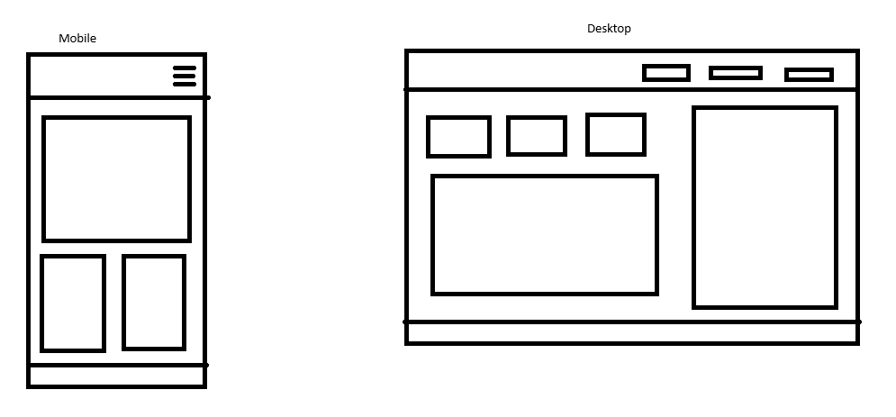

Monica Beauty
Monica Beauty: Monica beauty
Reason for Selection:The website will be designed to meet the course learning outcomes, including developing dynamic websites with valid HTML and CSS and leveraging browser APIs.
Site Purpose
This website will serve as an online platform to showcase a salon’s services, provide information to customers, and allow them to book appointments.
Scenarios
- Is it also for men?
- The salon offers services for nails?
Color Schema
Primary Color: White - Used for backgrounds.
Secondary Color: #b1607a - Used for header and footer.
Typography
Primary Font: Barlow - Used for everything.
Wireframe
